This lesson is probably the most anticipated one. We already talked about shaders, and that is the most demanding topic.
The funny thing is that we have been using them since the beginning. When we are creating Three.js built-in materials, those materials are composed of shaders. Everything showing up on the WebGL render is made possible because of shaders, but it's time to create them on our own.
We will start by explaining what shaders are and when to use them. Then we will create our own very simple shaders. We will, of course, cover the syntax of the shader language. And finally, we will do some exercises to practice classic situations.
A shader is, in fact, one of the main components of WebGL. If we had started WebGL without Three.js, it would have been one of the first things we would have to learn, and this is why native WebGL is so hard.
A shader is a program written in GLSL that is sent to the GPU. They are used to position each vertex of a geometry and to colorize each visible pixel of that geometry. The term "pixel" isn't accurate because each point in the render doesn't necessarily match each pixel of the screen and this is why we prefer to use the term "fragment" so don't be surprised if you see both terms.
Then we send a lot of data to the shader such as the vertices coordinates, the mesh transformation, information about the camera and its field of view, parameters like the color, the textures, the lights, the fog, etc. The GPU then processes all of this data following the shader instructions, and our geometry appears in the render.
There are two types of shaders, and we need both of them.
The vertex shader's purpose is to position the vertices of the geometry. The idea is to send the vertices positions, the mesh transformations (like its position, rotation, and scale), the camera information (like its position, rotation, and field of view). Then, the GPU will follow the instructions in the vertex shader to process all of this information in order to project the vertices on a 2D space that will become our render —in other words, our canvas.
When using a vertex shader, its code will be applied on every vertex of the geometry. But some data like the vertex position will change between each vertex. This type of data —the one that changes between vertices— is called an attribute. But some data doesn't need to switch between each vertex like the position of the mesh. Yes, the location of the mesh will impact all the vertices, but in the same way. This type of data —the one that doesn't change between vertices— is called a uniform. We will get back to attributes and uniforms later.
The vertex shader happens first. Once the vertices are placed, the GPU knows what pixels of the geometry are visible and can proceed to the fragment shader.
The fragment shader purpose is to color each visible fragment of the geometry.
The same fragment shader will be used for every visible fragment of the geometry. We can send data to it like a color by using uniforms —just like the vertex shader, or we can send data from the vertex shader to the fragment shader. We call this type of data —the one that comes from the vertex shader to the fragment shader— varying. We will get back to this later.
The most straightforward instruction in a fragment shader can be to color all the fragments with the same color. We get the equivalent of the MeshBasicMaterial —if we had set only the color property.
Or we can send more data to the shader, for instance, a light position. We can then color the fragments according to how much the face is in front of the light source. We would get the MeshPhongMaterial equivalent—if we had one light in the scene.
The vertex shader position the vertices on the render.
The fragment shader color each visible fragment (or pixel) of that geometry.
The fragment shader is executed after the vertex shader.
Data that changes between each vertices (like their position) is called attribute and can only be used in the vertex shader.
Data that doesn't change between vertices (like the mesh position or a color) is called uniform and can be use in both the vertex shader and the fragment shader.
We can send data from the vertex shader to the fragment shader using varying.
Three.js materials try to cover as many situations as possible, but they have limitations. If we want to break those limits, we have to write our own shaders.
It can also be for performance reasons. Materials like MeshStandardMaterial are very elaborate and involve a lot of code and calculations. If we write our own shader, we can keep the features and calculations to the minimum. We have more control over the performance.
Writing our own shader is also an excellent way to add post-process to our render, but we will see this in a dedicated lesson.
Once you master the shaders, they'll become a must in all your projects.
To create our first shader, we need to create a particular material. This material can be a ShaderMaterial or a RawShaderMaterial. The difference between these two is that the ShaderMaterial will have some code automatically added to the shader codes while the RawShaderMaterial, as its name suggests, will have nothing.
We will start with the RawShaderMaterial to better understand what's happening.
The starter contains a simple plane with a MeshBasicMaterial on it.
Replace that MeshBasicMaterial with a RawShaderMaterial:
You should get an error.
As we said earlier, we need to provide both the vertex and the fragment shader. You can do this with the vertexShader and fragmentShader properties:
The problem with that technique is that simple quotes can contain only one line inside —double-quotes too. Our shaders —as simple as they are at the start, will be too long to be written on one line.
A reliable solution is to use back quotes —also called backtick, acute or left quote. Most modern browsers support them. This technique is called template literals, and we can use line breaks in it.
The key or shortcut to write this character depends on your keyboard. Here's a thread on the subject to help you: https://superuser.com/questions/254076/how-do-i-type-the-tick-and-backtick-characters-on-windows/879277
Once you've found the key, change your simple quotes with back quotes:
We can finally write our shaders. Just copy the code, we will explain everything later:
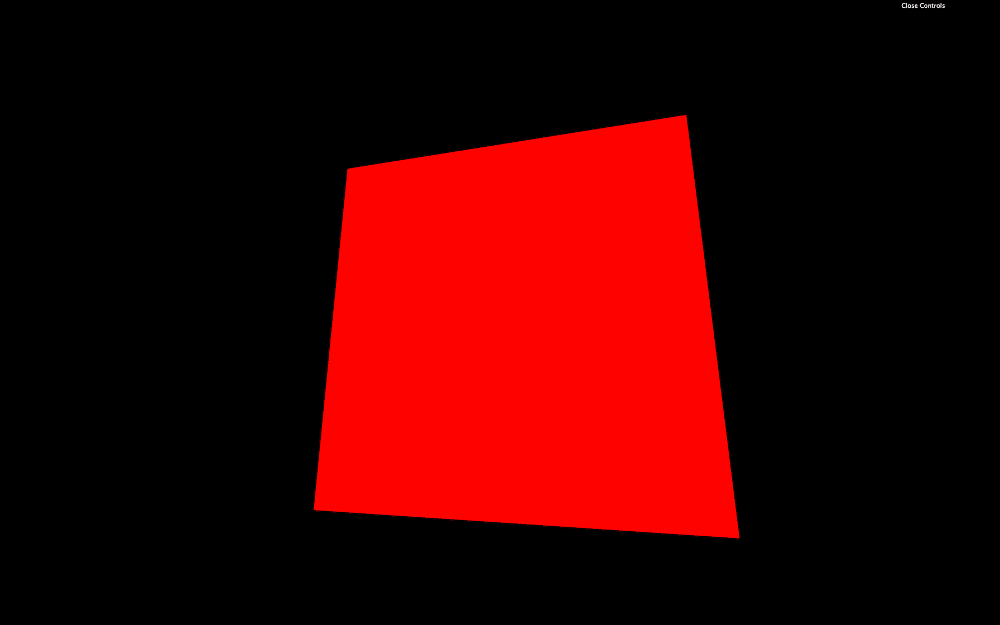
You should get a red plane. Congratulations, you might not yet understand what's written here, but it's your first shader and a good start for an incredible journey.
Before we get into the code itself, let's try to improve the way we work. The back quotes are an excellent solution for small code, and we will use it in future lessons with shaders, but we are missing syntax coloration. Once we have multiple shaders with a lot of code in it, our script will become unbearable. Having a good and comfortable setup is essential.
We are going to move the code into separate files. First, move the vertex shader code and the fragment shader codes respectively in /src/shaders/test/vertex.glsl and /src/shaders/test/fragment.glsl.
Even if we will have only one shader in our project, it's a healthy habit to separate and organize our code as best as possible. Consequential projects can have dozens of custom shaders.
Unless your code editor already supports glsl, the syntax coloration probably doesn't work for those two new files. To add the syntax coloration, if you are using VSCode, go to your plugins, search for shader, and install the Shader languages support for VS Code plugin. If you are using another code editor, look for compatible plugins and keep an eye on the popularity and the reviews.
Once installed, you should have a nice syntax coloration on the .glsl files. If not, try to restart your code editor.
Syntax coloration is cool, but having a linter is even better. A linter will validate your code and find potential errors while you are writing it. It can be really useful to avoid basic mistakes without having to test the result on the browser.
We won't use one in the following lessons because installing it can be hard but if you want to give it a try, I recommend you watching this video in the Lewis Lepton Youtube Channel: https://www.youtube.com/watch?v=NQ-g6v7GtoI
The linter will also produce errors on incomplete shaders which is a problem because we are going to write partial shaders a little later in the lesson. It's up to you, but you can give it a try.
Let's try to import the files into our script:
Unfortunately, we get a Webpack error. We need to tell Webpack how to handle .glsl files.
To do this, go to the /bundler/webpack.common.js where loaders are set in the rules array property.
Add the following rule at the rules —or anywhere, as long as it's in the array —and don't forget the comma between those rules:
This rule solely tells Webpack to provide the raw content of the files having .glsl, .vs, .fs, .vert or .frag as extension. We might as well have used .glsl, but some people feel more comfortable using other file extensions.
Re-launch the server with npm run dev and the Webpack error will disappear.
If you log testVertexShader and testFragmentShader, you'll get the shader code as a plain string. We can use these two variables in our RawShaderMaterial:
Most of the common properties we've covered with other materials such as wireframe, side, transparent or flatShading are still available for the RawShaderMaterial:
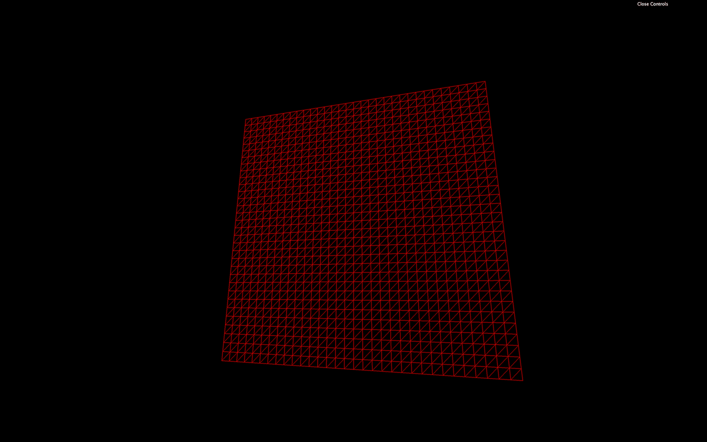
But properties like map, alphaMap, opacity, color, etc. won't work anymore because we need to write these features in the shaders ourselves.
Comment or delete the wireframe line.
The language used to code the shaders is called GLSL and stands for OpenGL Shading Language. It's close to C language. Let's learn the basics of its syntax.
There is no console and, thus, no way to log values. That is due to the code being executed for every vertex and every fragment. It would make no sense to log one value.
The indentation is not essential. You can indent as you like.
The semicolon is required to end any instruction. Forgetting even one semicolon will probably result in a compilation error, and the whole material won't work.
It's a typed language, meaning that we must specify a variable's type, and we cannot assign any other type to that variable.
To declare a variable, we must start by the type, followed by the name (usually in camelCase), then the = sign, then the value, and end with a ;:
There are multiple different types.
Floats are decimals. They can be negative or positive. We must always provide the . of the decimals even if the value is rounded:
We can do mathematic operations like +, -, * and /:
Integers work just like the floats, but without the decimals' .:
We can also do mathematic operations:
But we can't mix float and int in these operations:
But we can convert types on the fly:
Booleans are just booleans:
This is where things get interesting. If we want to store values like 2 coordinates with x and y properties, we can use a vec2:
An empty vec2 will result in an error:
We can change these properties after creating the vec2:
Doing operations like multiplying a vec2 with a float will operate both the x and the y properties:
vec3 is just like vec2, but with a third property named z. It's very convenient when one needs 3D coordinates:
While we can use x, y, and z, we can also work with r, g, and b. This is just syntax sugar and the result is exactly the same. It's very effective when we use a vec3 to store colors:
A vec3 can also be partially created from a vec2:
We can also take a part of the vec3 to generate a vec2:
Here, the bar will be a vec2 with 1.0, and 2.0 as values.
This is called a swizzle and we can also use the properties in a different order:
Finally, the vec4 works like it's two predecessors but with a fourth value named w or a —w because there is no letter after z in the alphabet and a for "alpha":
There are other types of variables such as mat2, mat3, mat4, or sampler2D, but we will see those later.
Just like in most programming languages, we can create and use functions.
A function must start with the type of the value that will be returned:
If the function isn't supposed to return anything, we set the type to void:
We can specify parameters, but we also have to provide their type:
This function is, as you can imagine, worthless.
GLSL has many built-in classic functions such as sin, cos, max, min, pow, exp, mod, clamp, but also very practical functions like cross, dot, mix, step, smoothstep, length, distance, reflect, refract, normalize.
Unluckily, there is no beginner-friendly documentation and, most of the time, we do naive searches on the web and usually end up on these three websites:
https://www.shaderific.com/glsl-functions
Shaderific is an iOS application that lets you play with GLSL. The application is not something to care about, but the documentation isn't too bad.
https://www.khronos.org/registry/OpenGL-Refpages/gl4/html/indexflat.php
This documentation deals with OpenGL, but most of the standard functions you'll see will be compatible with WebGL. Let's not forget that WebGL is just a JavaScript API to access OpenGL.
The book of shaders mainly focus on fragment shaders and has nothing to do with Three.js but it is a great resource to learn and it has its own glossary.
Now that we know the GLSL syntax, let's try to understand what's in our shaders.
Keep in mind that the vertex shader purpose is to position each vertex of the geometry on the render 2D space. In other words, the vertex shader will convert the 3D vertices coordinates to our 2D canvas coordinates.
This main function will be called automatically. As you can see, it doesn't return anything (void).
The gl_Position variable already exists. We need to assign it. This variable will contain the position of the vertex on the screen. The goal of the instructions in the main function is to set this variable properly.
At the end of this instruction, we get a vec4. This means that we can play with its x, y, z, and w properties directly on the gl_Position variable:
The plane should move on the top right corner. But be careful; we didn't truly move the plane in a 3D space as if we were playing with the position in Three.js. We did move the projected plane on a 2D space.
Think of it like a drawing you did on a paper. In this drawing, you have respected the perspective with vanishing points. Then, you move the whole picture to the top right corner of your desk. The perspective didn't change inside the drawing.
You're probably wondering why we need 4 values for the gl_Position if its final goal is to position vertices on a 2D space. It's actually because of the coordinates or not precisely in 2D space; they are in what we call clip space which needs 4 dimensions.
A clip space is a space that goes in all 3 directions (x, y , and z) in a range from -1 to +1. It's like positioning everything in a 3D box. Anything out of this range will be "clipped" and disappear. The fourth value (w) is responsible for the perspective.
Fortunately, all of this is automatic, and, as a beginner, we don't need to master everything. It's just for the sake of knowing.
But what are we exactly sending to this gl_Position?
First, we retrieve the vertex position with:
Remember that the same code applies to every vertices of the geometry. Attributes are the only variable that will change between the vertices. The same vertex shader will be applied for each vertex and the position attribute will contain the x, y, and z coordinates of that specific vertex.
Then, we convert this vec3 to a vec4:
This is because the following matrices and the gl_Position need to use vec4 as we saw earlier.
Each matrix will transform the position until we get the final clip space coordinates.
There are 3 matrices in our code, and because their values are the same for all the vertices of the geometry, we retrieve them by using uniforms.
Each matrix will do a part of the transformation:
modelMatrix will apply all transformations relative to the Mesh. If we scale, rotate or move the Mesh, these transformations will be contained in the modelMatrix and applied to the position.viewMatrix will apply transformations relative to the camera. If we rotate the camera to the left, the vertices should be on the right. If we move the camera in direction of the Mesh, the vertices should get bigger, etc.projectionMatrix will finally transform our coordinates into the final clip space coordinates.If you want to find out more about those matrices and coordinates, here's a good article: https://learnopengl.com/Getting-started/Coordinate-Systems.
To apply a matrix, we multiply it. If want to apply a mat4 to a variable, this variable has to be a vec4. We can also multiply matrices with other matrices:
There is actually a shorter version where the viewMatrix and the modelMatrix are combined into a modelViewMatrix:
This is shorter, but we have less control over each step.
We will actually make our code even longer to have a better understanding and more control on the position:
Those changes have the exact same result but we can now move the whole model just by tweaking the values of the modelPosition:
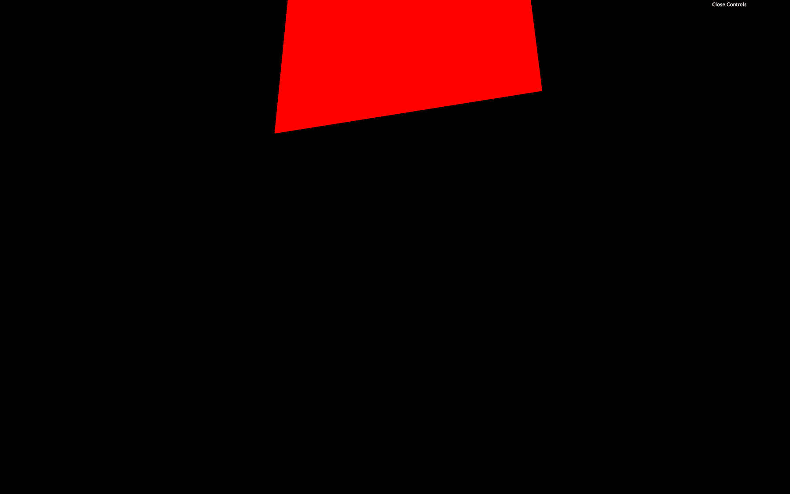
The whole plane should appear higher.
Or we can do cooler things such as transforming our plane wave:
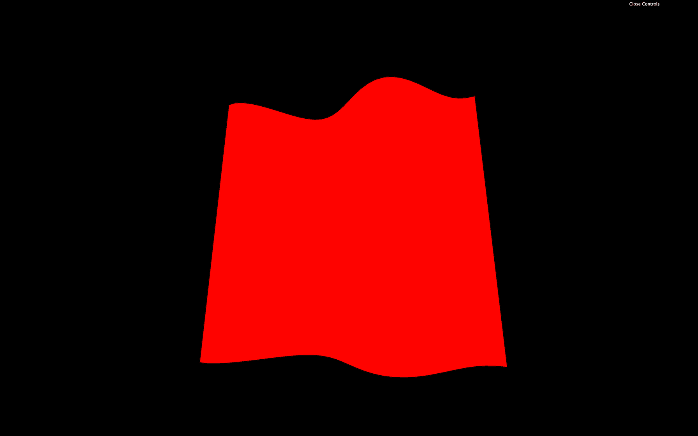
We changed the z by using the x coordinate through a sin(...) function. Good luck getting this result with Three.js built-in materials.
The fragment shader code will be applied to every visible fragment of the geometry. That is why the fragment shader comes after the vertex shader.
The code is more manageable than the vertex shader.
Again, we face the main function:
We also have an instruction at the top of the code:
This instruction lets us decide how precise can a float be. There are different possible values:
highpmediumplowphighp can have performance hit and might not even work on some devices. lowp can create bugs by the lack of precision. We ordinarily use mediump. We also could have set the precision for the vertex shader but it's not required.
This part is automatically handled when we are using ShaderMaterial instead of RawShaderMaterial.
The gl_FragColor is like the gl_Position but for the color. It's already declared, and we need to assign it in the main function.
It's a vec4 with the first three values being the red, green, and blue channels (r, g, b) and the fourth value being the alpha (a):
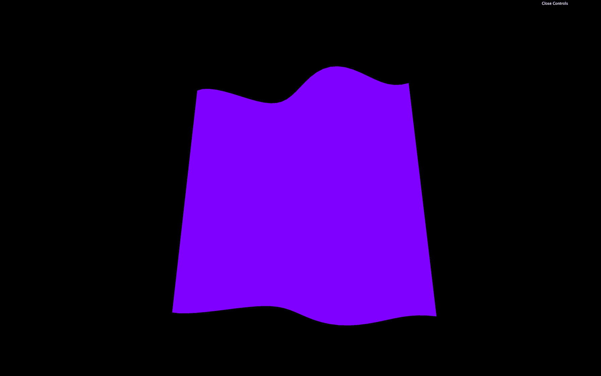
This code will result on a purple color for the whole geometry.
Each property of gl_FragColor goes from 0.0 to 1.0. We can go beyond those values with no error, but it won't help us.
If we want to set an alpha below 1.0, we also need to set the transparent property to true in the RawShaderMaterial:
Attributes are values that change between each vertex. We already have one attribute named position that contains a vec3 of the coordinates of each vertex.
We can add our own attributes directly to the BufferGeometry as we did during the Geometries lesson.
We will add a random value for each vertex and move that vertex on the z axis according to that value for this lesson.
Let's get back to the JavaScript and create a Float32Array of the right size right after creating the geometry. To know how much vertices we have in the geometry, we can use the already existing position attribute:
Then we fill this array with random values:
Finally, we use that array in a BufferAttribute and add it to our geometry attributes:
The first parameter of setAttribute(...) is the name of the attribute. That is the name we will use in the shader. We can choose any name but it's good practice to prefix with a for "attribute".
The first parameter of BufferAttribute is the data array and the second parameter is how many values compose one attribute. If we were to send a position, we would use 3 because positions are composed of 3 values (x, y and z). But here, it's just 1 random value per vertex so we use 1.
We can now retrieve this attribute in the vertex shader and use it to move the vertices:
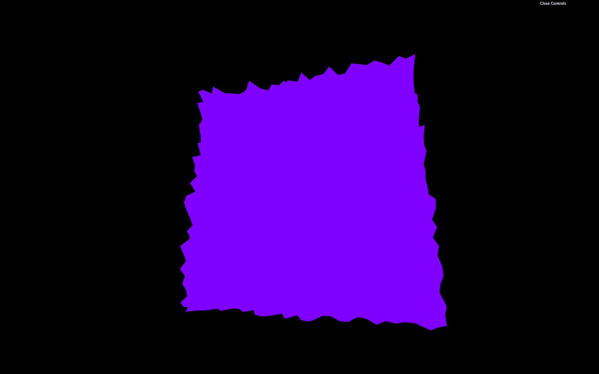
Now you get a plane composed of random spikes.
We now want to color the fragments also with the aRandom attribute.
Unfortunately, we cannot use attributes directly in the fragment shader.
Fortunately, there is a way of sending data from the vertex shader to the fragment shader called varyings.
We have to do it on both the vertex and the fragment shader.
In the vertex shader, we need to create the varying before the main function. We will call our varying vRandom:
You can call your varying as you want but I recommend prefixing with a v to distinguish them easily.
Then, we update the varying value in the main function:
Finally, we get the varying value in the fragment shader with the same declaration, and we use it as we want in the main function:
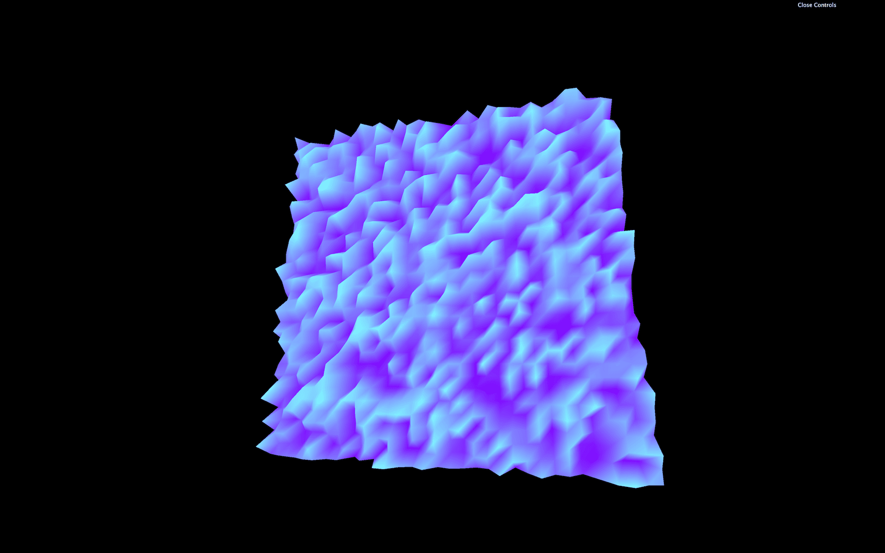
You now obtain a striking looking shape with colored spikes on it.
One interesting thing with varyings is that the values between the vertices are interpolated. If the GPU is drawing a fragment right between two vertices —one having a varying of 1.0 and the other having a varying of 0.0—the fragment value will be 0.5.
Let's remove or comment the elevation part and the varying, so we get back to our purple plane.
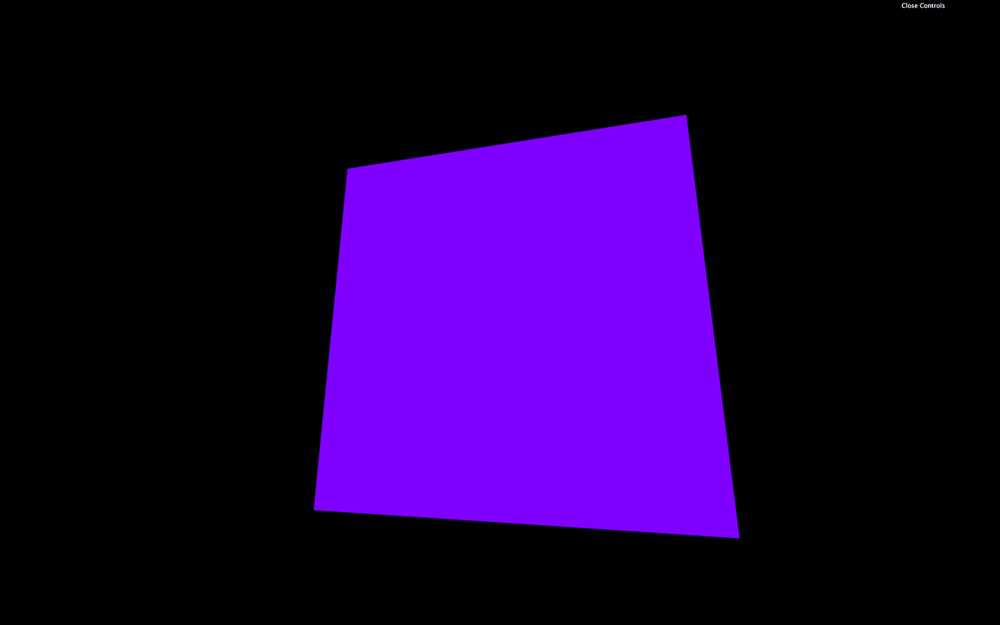
We will use attributes later on.
Uniforms are a way to send data from the JavaScript to the shader.
That can be valuable if we want to use the same shader but with different parameters, and it's also the occasion to have parameters that can change during the experience.
We can use uniforms with both vertex and fragment shaders, and the data will be the same for every vertex and every fragment. We already have uniforms in our code with projectionMatrix, viewMatrix, and modelMatrix but we didn't create these. Three.js did.
Let's create our own uniforms.
To add uniforms to our material, use the uniforms property. We are going to make our plane wave and we want to control the waves frequency:
Here, the name of the uniform we chose is frequency. While it's not mandatory, it's considered a good practice to prefix with the letter u to distinguish "uniforms" from other data.
Change the name of the uniform to uFrequency:
If you're looking at other tutorials or examples, you might see uniforms being declared like this uFrequency: { value: 10, type: 'float' }. There was a time when we had to specify the type but it's deprecated now.
We can now retrieve the value in our shader code and use it in our main function:
The result is the same, but we can now control the frequency from the JavaScript.
Let's change our frequency to a vec2 to control waves horizontally and vertically. We simply use a Three.js Vector2:
In our shader, we change the float to vec2, and we apply the displacement on the z axis by using the y axis too:
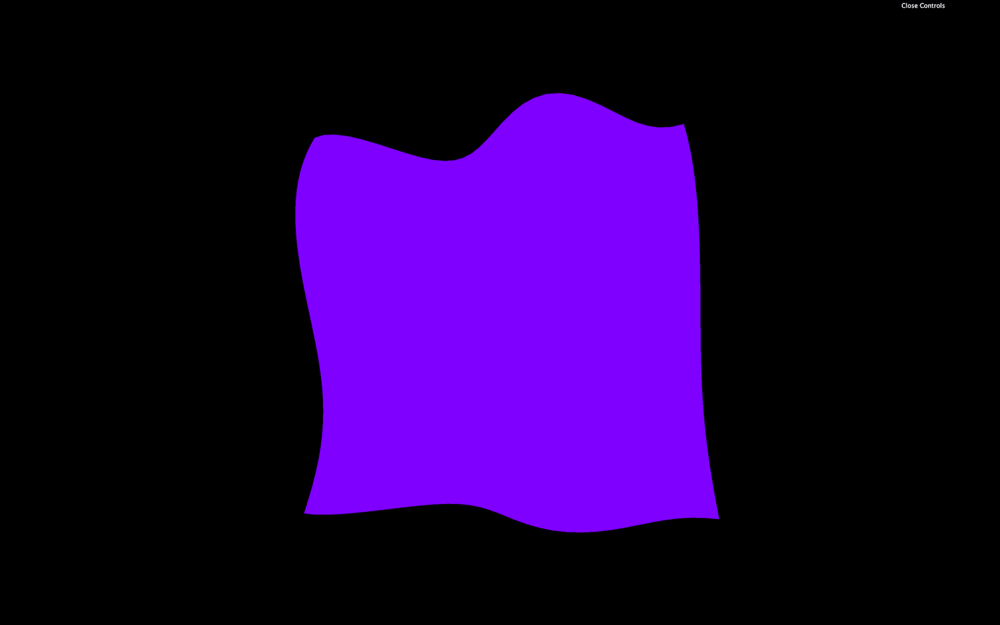
Take your time on this one. It's easy to make mistakes.
Because those values are now controlled in the JavaScript, we can add them to our Dat.GUI:
Let's add a new uniform to animate our plane like a flag in the wind. We send a time value to the shader by using a uniform and we use this value inside the sin(...) function. First, update the material to add the uTime uniform:
Then, update this uTime uniform in the tick function. To do so, use the getElapsedTime function from the Clock to know how much time passed:
Finally, we get the uniform value in our vertex shader, and we use it in the two sin(...) functions:
You should see the flag wave as if it was flying the wind.
Let's invert the direction by using a - before the uTime instead of a +:
Be careful with uTime: if we were to use native JavaScript solution like Date.now(), it wouldn't work. That is due to Date.now() returning the number of milliseconds spent since January 1st, 1970 and this value is too big for a shader. To put it in a shell, remember that we cannot send uniform values too big or too small.
Don't forget that this is still a plane and we can transform the Mesh as we used to. Let's give our plane a flag shape.
We could do it in the shader by multiplying the modelPosition.y value but don't forget that you can still change the position, scale and rotation directly on the mesh:
Uniforms are also available in the fragment shader. Let's add a new uniform to control the color. For a color value, we can use a Three.js a Color:
Then, in our fragment shader, we retrieve the value, and we use it inside our gl_FragColor vec4:
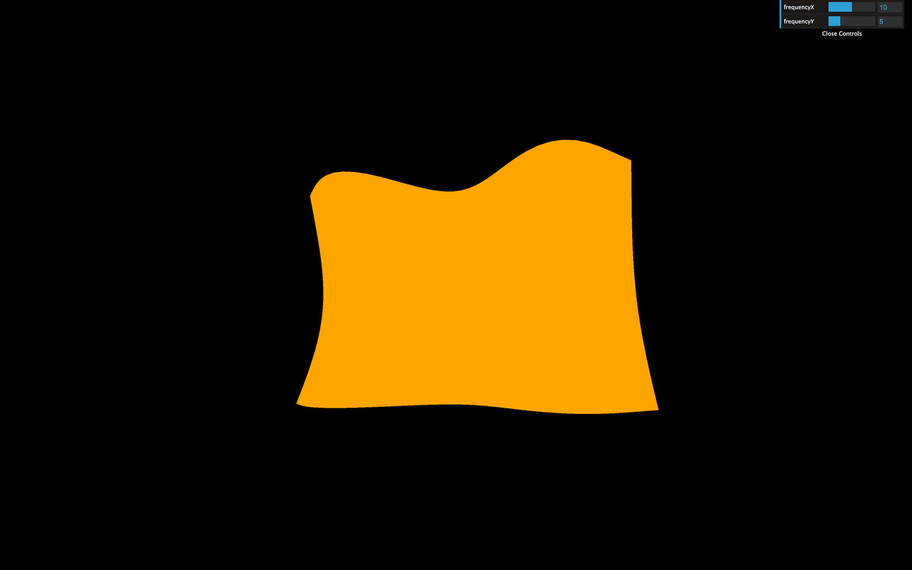
The flag should now be orange.
Textures are a little harder, but we almost have everything we need.
First, we have to load a texture as we did in previous lessons. We already have a flag texture in the /static/textures/ folder and we can use the textureLoader already available in the JavaScript starter:
Then we can send the texture as a uniform. We can call it uTexture:
While it's tempting to send it to the fragment shader immediately, we have a problem. To take fragment colors from a texture and apply them in the fragment shader, we must use the texture2D(...) function. The first parameter of texture2D(...) is the texture (easy, it's our uTexture), but the second parameter consists of the coordinates of where to pick the color on that texture, and we don't have these coordinates yet.
That information should sound familiar. We are looking for coordinates that should help us project a texture on a geometry. We are talking about UV coordinates.
The PlaneGeometry automatically generates these coordinates, and we can see that if we log geometry.attributes.uv.
Because it's an attribute, we can retrieve it in the vertex shader:
Still, we need those coordinates in the fragment shader. To send data from the vertex shader to the fragment shader, we need to create a varying. We are going to call that varying vUv and update its value in the main function:
We can now retrieve the varying vUv in the fragment shader, retrieve the uniform uTexture and eventually get the fragment color with texture2D(...):
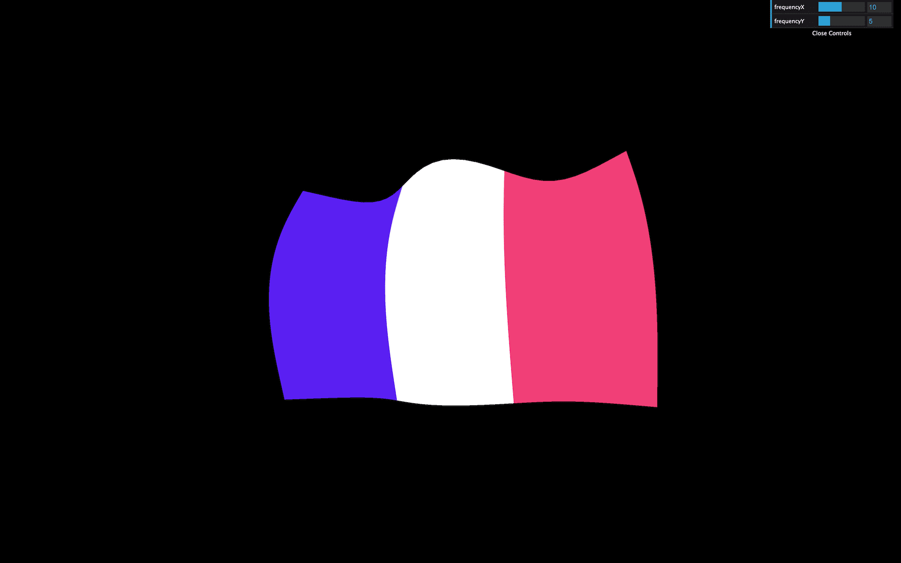
The output of texture2D(...) is a vec4 because it contains r, g, b,and a —even if our texture has no alpha variation.
You should get a nice looking flag.
Again, take your time. Doing mistakes here is easy.
Our flag color doesn't vary much. It would be great to have a brightness variation as if there are shadows.
The technique we are going to use isn't physically accurate, but it should do the trick.
First, in the vertex shader, we are going to store the wind elevation in a variable:
Then, we send the elevation to the fragment by using a varying:
Finally, we retrieve the vElevation varying in our fragment shader, and use it to change the r, g, and b properties of our textureColor:
You should see brightness variations on the flag as if we had light and shadows. It's a cheap technique, but it works.
Until now, we have used RawShaderMaterial. The ShaderMaterial works just the same, but with pre-built uniforms and attributes prepended in the shader codes. The precision will also be automatically set.
To use it, simply replace your RawShaderMaterial by ShaderMaterial:
Then remove the following uniform and attribute and precision in both shaders:
uniform mat4 projectionMatrix;uniform mat4 viewMatrix;uniform mat4 modelMatrix;attribute vec3 position;attribute vec2 uv;precision mediump float;The shader should work just like before because the ShaderMaterial will add these automatically.
Debugging a shader is hard. We cannot log data as in JavaScript because it's the GPU that execute the shader code and it does it for every vertices and every fragment.
Favorably for us, Three.js is doing a great job passing on the errors at compilation.
If we forget a semicolon, Three.js will log the full shader and tell us the line where the error occurred with a short description like ERROR: 0:71: 'vec4' : syntax error.
This message means that the error occurred at line 71, but the problem might come from the line right before. Take your time, read the error, and you'll find what is wrong.
Having the whole shader code logged is also an excellent way to see what Three.js prepends to our shaders when using a ShaderMaterial.
Another solution to debug values is to use them in the gl_FragColor. That isn't precise because all we can see are color variations, but sometimes it's enough.
If the values are in the vertex shader, we can use a varying to pass it on to the fragment shader.
Let's say we want to see what the uv looks like. We can send it to the fragment with a varying —already done with vUv— and use it in the gl_FragColor:
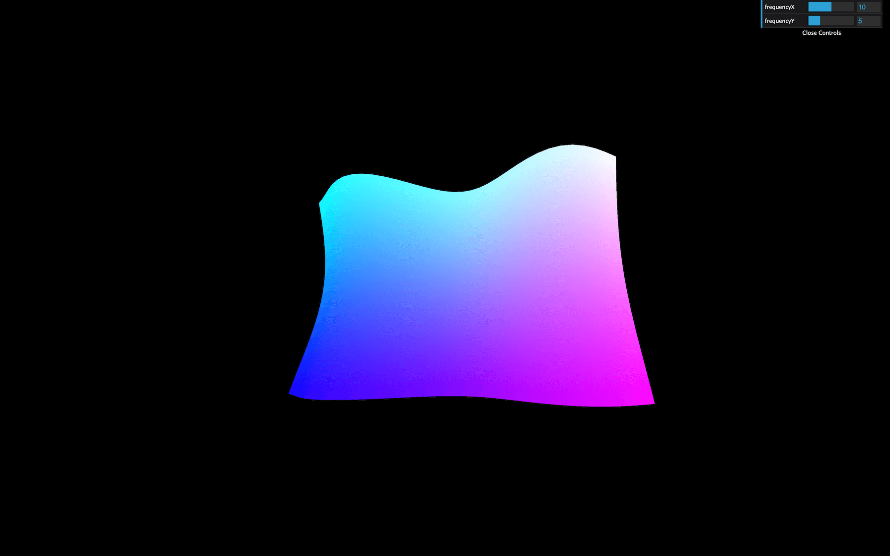
Once we understand the basics of the shaders, it's all about practice. Your first shaders will take countless hours, but you'll learn techniques that you'll frequently use.
In the next lessons, we will practice those techniques and even learn how to draw shapes in shaders, but if you want to go further, here are some links:
GLSLify is a node module that improves what we can do with our glsl files. With glslify, we can import and export glsl codes like modules. That is good to separate our code into multiple smaller and reusable parts.
We won't be using it in this course, but if your glsl code is getting too big, or let's say you need the same code in multiple files, you should try adding it to your project.
You can use the glslify-loader and add it to the rules of your webpack configuration.